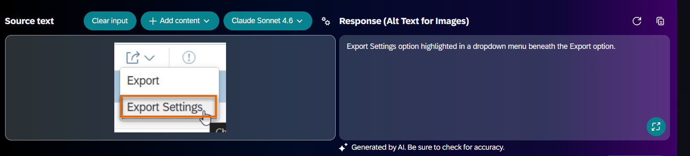

Designed two reusable prompt templates — one for accessible alt-text generation, one for release note drafting from Jira data — that were adopted globally across SAP User Assistance teams.

Two recurring tasks consumed a disproportionate amount of writing time across the SAP User Assistance team: writing alt text for UI screenshots and drafting release notes from Jira tickets.
Alt text was often skipped entirely or written inconsistently. Writers defaulted to phrases like "Image of Report Center" — meaningless to screen reader users — or wrote verbose descriptions that buried the functional detail. There was no shared standard, no word limit, and no guidance on what to focus on.
Release notes required writers to read each Jira ticket, interpret engineering language, translate it into customer-facing copy, and reformat it into the SAP UA template — a slow, mechanical task repeated dozens of times per release across six release cycles a year.
Both tasks had clear inputs, well-defined outputs, and existing quality standards that could be encoded directly into a prompt — making them strong candidates for AI assistance.